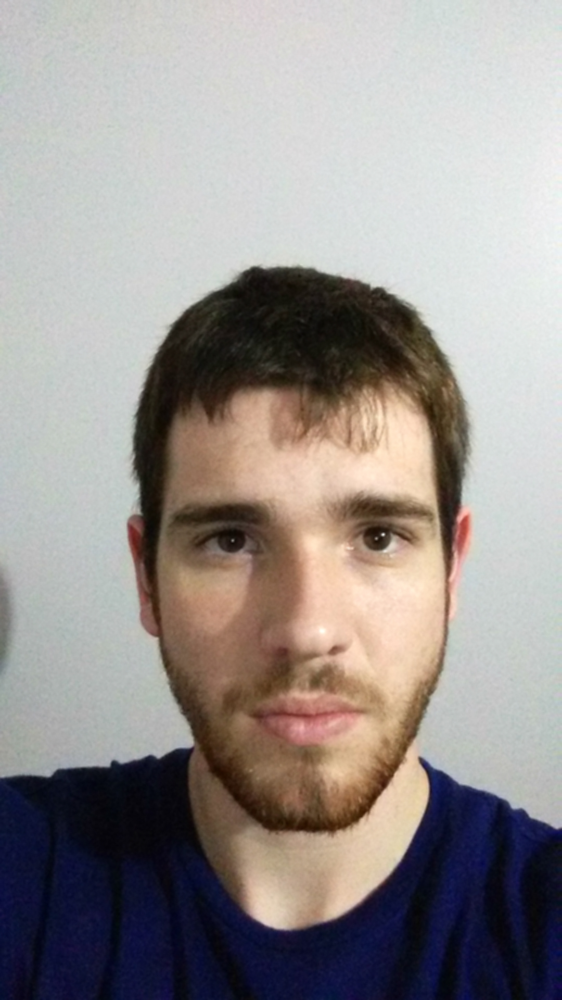

Primeira aparição: Crescer 2016
Nascimento: 12 de novembro de 1996.
Altura: 182cm.
Peso: 80kg.
Medidas: B198, C120, Q172.
Tipo sanguíneo: O-.
Habilidades especiais: Programar.
Gosta: Series,Ficção e Animes.
Desgosta: Spiders.
Estilo de luta: Mental.
Origem: Brasil.
Uma fala de vitória: "Ver você em ação é uma piada!"
SSF2 nickname: "A selvagem criança da natureza".
SFA3 nickname: "A animal pessoa amazônica".
SF4 nickname: "Guerreiro da selva".
SFA3 stage: Ramificação do Rio Madeira - pantano, Brasil (ramificação do rio Madeira: talvez possa ser Mato Grosso, ou Tocantins?).
SF2 stage: Bacia do rio Amazonas (Brasil).
Golpes especiais famosos: Hello World .